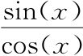
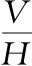
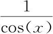
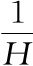
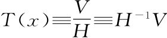
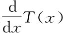
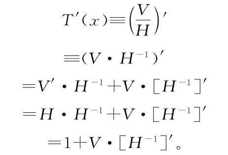
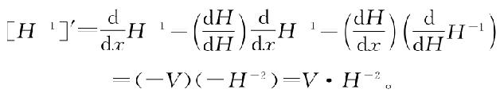
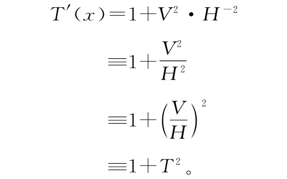

求出了V和H的导数之后，我们可以简要介绍一下如何避免死记硬背你在数学课上学到的奇怪知识，例如正切的导数是“1加正切平方”，或正割的导数是“我压根记不住的一对东西”。前面说过正切tan（x）是课本上为

起的名字，也就是我们说的
。正割sec（x）则完全是多余的名字，表示
，或
，或H-1。让我们用我们已经建立的那些知识来将这些知识构建出来，从而避免以后再去死记硬背。将“正切”缩写为
，我们想求
。利用第3章的相乘锤子：
［H-1］'项是什么？利用撒谎然后改正手法更容易看出来。可以得到

其实，我们刚刚偶然算出了“正割”（即H-1）的导数。
现在永远忘掉它。将这个代回到我们在计算T'（x）时卡住的地方，可以得到

这样我们就发明了这个知识，“正切”的导数就是“1加正切的平方”。现在将这个同正切一起埋藏到地底深处。希望我们再也不要用到它……